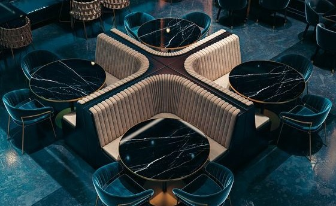
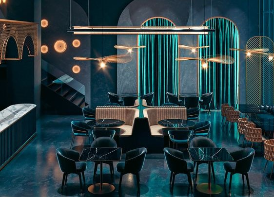

En lo profundo de las calles adoquinadas de la ciudad, se alza un lugar que trasciende el tiempo y evoca la esencia misma de la elegancia y la exclusividad. Fänfud, se cierne como un refugio de sabores y emociones, donde los comensales son transportados a un mundo de alta cocina y tradición.

La historia de Fänfud se entrelaza con el pasado de una tierra rica en cultura culinaria: Alemania. Hace décadas, este lugar abrió sus puertas, inspirado por la pasión por la cocina y el deseo de crear un espacio donde la tradición alemana se fundiera con la modernidad culinaria. Así, comenzó un viaje gastronómico que perduraría a lo largo de los años.

Desde sus inicios, Fänfud ha sido un remanso de elegancia, un rincón reservado para aquellos que buscan una experiencia culinaria inigualable. El ambiente cuidadosamente diseñado y la atención personalizada a cada detalle reflejan el compromiso del restaurante con la excelencia y la satisfacción de sus clientes más exigentes.
Así, te invitamos a formar parte de nuestra historia. Permítenos llevarte en un viaje gastronómico que te enamorará de nuestros sabores y te brindará una experiencia culinaria inolvidable.

Bienvenido a Fänfud, donde la magia de la cocina nos une en un canto a la buena mesa y la historia compartida.